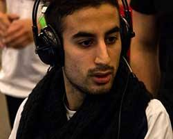

Nýjustu fréttir
”Once a cheater, always a cheater”, a repeated phrase on forums all over the world since the witch hunt last year.
Now the Swedish LAN organizers from Rendevouz wants to give sentenced cheaters a chance to clear their names – and welcomes players such as Joel ”Emilio” Mako for their upcoming event.
– It’s the beginning of my comeback, Emilio tells Aftonbladet Esport.
The CS:GO community was chocked last year when former Team Property player, Joel ”Emilio” Mako, received a VAC ban in the middle of a live broadcast. In an interview with Aftonbladet Esport Emilio admitted to cheating, but said it only happened in a single matchmaking game with his friends – and never in an official match.
To prove his skills he wanted to continue competing, most of all on LAN – something which for obvious reasons is hard to do when you’re player profile says ”BANNED”.
”I know what I’m capable off”
As Emilio was looking to once again compete, The Swedish LAN Rendevouz was at the time the hottest option. The organizers however did not accept him, but now, ahead of the 2015 edition, Emilio is set to return to the LAN event experience.
– It’s a good start considering I’ve been excluded from the scene for over a year. It feels great to get back and participate at a LAN again, even though it’s not an international event. I’m ready for this journey I get to do once again, Emilio tells Aftonbladet Esport.
So you only consider this ”a start”?
– Exactly. It’s a bit nostalgic, sort of like I’m going back ten years in time, having to fight my way into the scene again. So yeah, this is the start of my comeback. I’ve got many plans for the next year, for example going to Copenhagen Games.
Since Emilio was caught and banned, he has not been allowed to compete in most tournaments. Lately, however, he’s been welcomed to play in tourneys such as Gothenburg Games and the qualifier for ESL Nordic Nationals.
Emilio thinks this is a trend that will continue – that more organizers will accept him – and hopes to get back into the scene this way.
– I know what I’m capable off, that’s why I haven’t left Counter-Strike. And I have no plans to do so, he says.